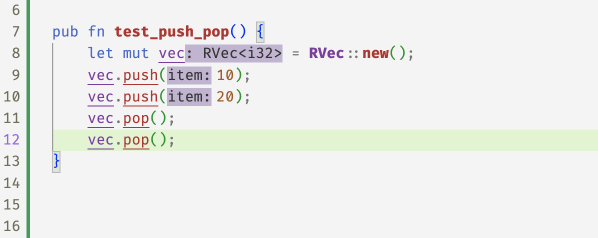
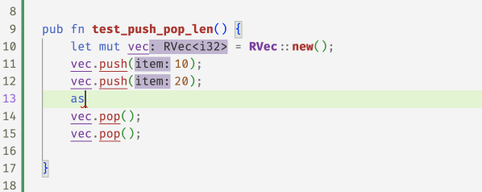
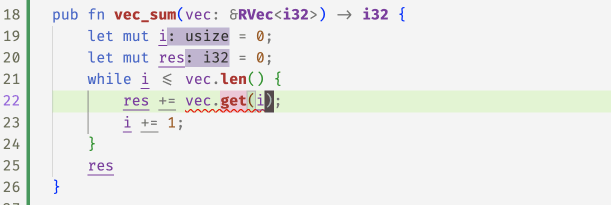

While rustc has a keen eye for spotting nasty bugs at compile time, it is not omniscient. We’ve all groaned in dismay at seeing deployed code crash with messages like
panicked at 'index out of bounds: the len is ... but the index is ...'Next, lets see how flux’s refinement and ownership mechanisms let us write a refined vector API whose types track vector sizes and ensure — at compile time — that vector accesses cannot fail at runtime.
Refined Vectors
To begin with, we will defined a refined vector type which is simply a wrapper around the standard Vec type
#[flux::refined_by(len: int)]
pub struct RVec<T> {
inner: Vec<T>,
}The #[flux::refined_by(len: int)] attribute tells flux that the type RVec<T> struct is indexed by a len refinement which tracks the size of the underlying vector, just like the indices for i32 and bool tracked the actual value of the underlying integer or boolean). The idea is that the type
RVec<i32>[10]represents a vector ofi32size 10, andRVec<bool>{v:0 < v}represents a non-empty vector ofbool, andRVec<RVec<f32>[n]>[m]represents a vector of vectors off32of sizemand each of whose elements is a vector of sizen.
Creating Vectors
Now that we can talk about the size of a vector, lets build up an API for creating and manipulating vectors. I suppose one must start with nothing: an empty vector.
impl<T> RVec<T> {
#[flux::assume]
#[flux::sig(fn() -> RVec<T>[0])]
pub fn new() -> Self {
Self { inner: Vec::new() }
}
}The above implements RVec::new as a wrapper around Vec::new. The #[flux::assume] attribute tells Flux there is nothing to “check” here, as we are defining the API itself and trusting that the implementation (using vec is correct). The type signature says that callers of the RVec::new get back a vector indexed with 0 i.e. an empty vector.
Pushing Values
An empty vector is a rather desolate thing.
To be of any use, we need to be able to push values into the container, like so
#[flux::assume]
#[flux::sig(fn(self: &strg RVec<T>[@n], T)
ensures self: RVec<T>[n+1])]
pub fn push(&mut self, item: T) {
self.inner.push(item);
}The refined type for push says that it takes a strong reference (self) to an RVec<T> of size n and a value T and upon exit, the size of self is increased by 1.
Popping Values
Not much point stuffing things into a vector if we can’t get them out again.
For that, we might implement a pop method that returns the last element of the vector. Aha, but what if the vector is empty? You could return an Option<T> or since we’re tracking sizes, we could require that pop only be called with non-empty vectors.
#[flux::assume]
#[flux::sig(fn(self: &strg {RVec<T>[@n]:0 < n}) -> T
ensures self: RVec<T>[n-1])]
pub fn pop(&mut self) -> T {
self.inner.pop().unwrap()
}Now already flux can start checking some code, for example if you push two elements, then you can pop twice, but flux will reject the third pop at compile-time

Querying the Size
Perhaps we should peek at the size of the vector to make sure its not empty before we pop it. We can do that with a len method whose type says that the returned usize is, in fact, the size of the input vector
#[flux::assume]
#[flux::sig(fn(&RVec<T>[@n]) -> usize[n])]
pub fn len(&self) -> usize {
self.inner.len()
}Now, flux “knows” that after two pushes, the size of the vector is 2 and after the two pops, the size is 0 again

Random Access
Of course, vectors are not just stacks, they also allow random access to their elements which is where those pesky panics occur, and where the refined vector API gets rather useful. Since we’re tracking sizes, we can require that the method to get an element only be called with a valid index that is between 0 and the vector’s size
#[flux::sig(fn(&RVec<T>[@n], i: usize{i < n}) -> &T)]
pub fn get(&self, i: usize) -> &T {
&self.inner[i]
}
#[flux::sig(fn(&mut RVec<T>[@n], i: usize{i < n}) -> &mut T)]
pub fn get_mut(&mut self, i: usize) -> &mut T {
&mut self.inner[i]
}With these refined get methods, flux can now spot the ``off-by-one’’ error in the following code and accepts the fix 1

Its a bit gross to use get and get_mut directly, so instead we implement the Index and IndexMut traits for RVec which allows us to use the [] operator to access elements
impl<T> std::ops::Index<usize> for RVec<T> {
type Output = T;
#[flux::sig(fn(&RVec<T>[@n], i:usize{i < n}) -> &T)]
fn index(&self, index: usize) -> &T {
self.get(index)
}
}
impl<T> std::ops::IndexMut<usize> for RVec<T> {
#[flux::sig(fn(&mut RVec<T>[@n], i:usize{i < n}) -> &mut T)]
fn index_mut(&mut self, index: usize) -> &mut T {
self.get_mut(index)
}
}And now the above vec_sum example looks a little nicer

Memoization
Lets put the whole API to work in this “memoized” version of the fibonacci function which uses a vector to store the results of previous calls
pub fn fib(n: usize) -> i32 {
let mut r = RVec::new();
let mut i = 0;
while i < n {
if i == 0 {
r.push(0);
} else if i == 1 {
r.push(1);
} else {
let a = r[i - 1];
let b = r[i - 2];
r.push(a + b);
}
i += 1;
}
r.pop()
}Oops, flux is not happy with the call to pop at the end of the function which returns the last value as the result.
error[FLUX]: precondition might not hold
--> src/vectors.rs:40:5
|
40 | r.pop()
| ^^^^^^^Flux complains that the vector may be empty and so the pop call may fail … but why? Can you spot the problem?
Indeed, we missed a “corner” case – when n is 0 we skip the loop and so the vector is empty! Once we add a test for that, flux is happy.

Binary Search
As a last example, lets look at a simplified version of the binary_search method from std::vec, into which I’ve snuck a tiny little bug
pub fn binary_search(vec: &RVec<i32>, x: i32) -> Result<usize, usize> {
let mut size = vec.len();
let mut left = 0;
let mut right = size;
while left <= right {
let mid = left + size / 2;
let val = vec[mid];
if val < x {
left = mid + 1;
} else if x < val {
right = mid;
} else {
return Ok(mid);
}
size = right - left;
}
Err(left)
}Flux complains in two places
error[FLUX]: precondition might not hold
--> src/vectors.rs:61:19
|
61 | let val = vec[mid];
| ^^^^^^^^
error[FLUX]: arithmetic operation may overflow
--> src/vectors.rs:69:9
|
69 | size = right - left;
| ^^^^^^^^^^^^^^^^^^^The vector access may be unsafe as
midcould be out of bounds!The
sizevariable may underflow asleftmay exceedright!
Can you spot off-by-one and the fix?
Summary
So, we saw how Flux’s index and constraint mechanisms combine with Rust’s ownership to let us write a refined vector API that ensures the safety of all accesses at compile time.
Next time, we’ll see how these mechanisms are compositional in that we can use standard type machinery to build up compound structures and APIs from simple ones.
Why not use an iterator? We’ll get there in due course!↩︎